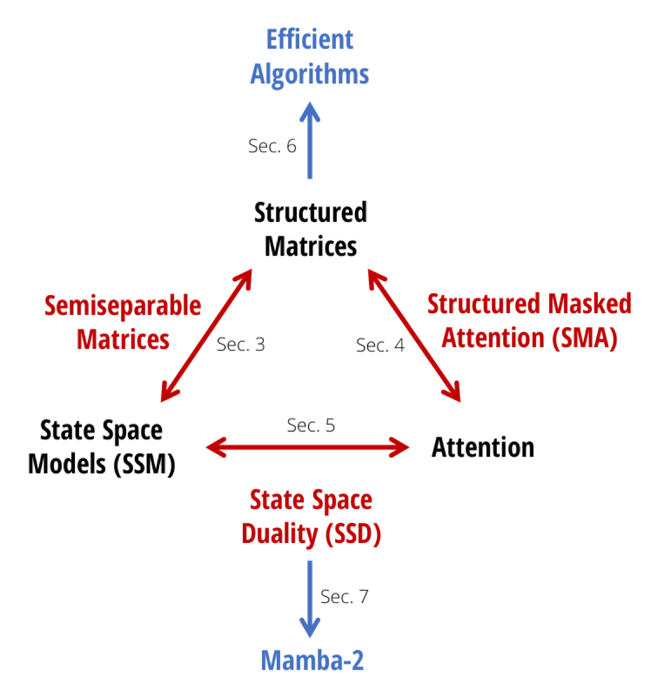
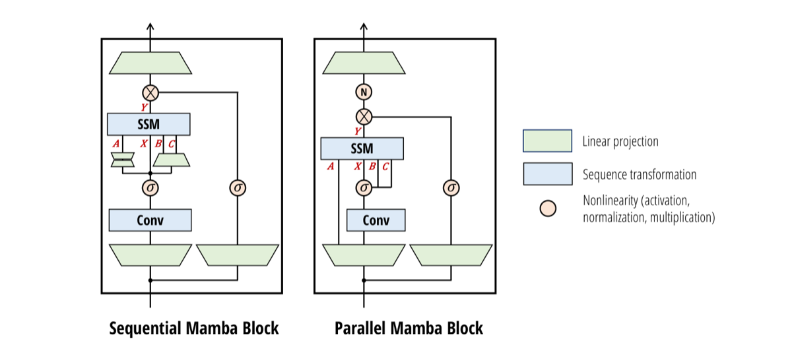
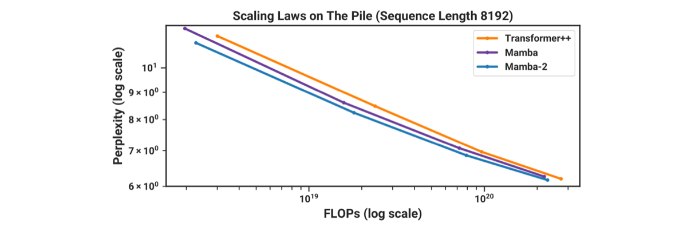

Overview — the logical flow개요 — 전체 논리 흐름
Figures from the paper논문 원본 그림



Comprehensive walkthrough전체 내용 정리
Motivation: two disjoint worlds동기: 단절된 두 세계
Decoder-only Transformers (GPT, Llama) dominate LM but cost O(T²) at training and cache O(T) at generation. Structured SSMs (S4, Mamba) scale linearly with constant state and recently matched Transformers at small/medium scale, yet their development is disconnected from Transformer theory and systems work, making them harder to optimize. The paper's goal is to build rich theoretical connections so that algorithmic and systems advances can transfer between the families, echoing the earlier Linear Attention result that 'Transformers are RNNs'.
디코더 전용 Transformer(GPT, Llama)는 언어 모델링을 지배하지만 학습 시 O(T²), 생성 시 O(T) 캐시 비용이 든다. 구조화 SSM(S4, Mamba)은 상태 크기가 일정한 채 선형으로 확장되며 최근 중소 규모에서 Transformer와 대등해졌으나, 그 발전은 Transformer 이론·시스템 작업과 단절되어 최적화가 어렵다. 본 논문의 목표는 풍부한 이론적 연결을 세워 두 계열 간에 알고리즘·시스템 발전이 전이되도록 하는 것으로, '트랜스포머는 RNN'이라던 선형 어텐션 결과를 잇는다.
SSMs as semiseparable matrices준분리 행렬로서의 SSM
A selective SSM h_t = A_t h_{t-1} + B_t x_t, y_t = C_t^T h_t computes Y = MX where M is a sequentially semiseparable (SSS) matrix with entries M_ji = C_j^T A_{j:i} B_i for j>=i. Semiseparable matrices have the defining property that every submatrix strictly below the diagonal is low-rank (rank <= state size N). This single equivalence is the heart of the paper: the linear-time recurrence and a quadratic 'materialize-the-matrix' computation are simply two algorithms for the same structured matrix-vector product.
선택적 SSM h_t = A_t h_{t-1} + B_t x_t, y_t = C_t^T h_t 는 j>=i에 대해 항목이 M_ji = C_j^T A_{j:i} B_i 인 순차 준분리(SSS) 행렬 M으로 Y = MX를 계산한다. 준분리 행렬은 대각 아래의 모든 부분행렬이 저랭크(랭크 <= 상태 크기 N)라는 성질을 갖는다. 이 단일 동치성이 논문의 핵심이다. 선형 시간 순환과 이차 '행렬 직접 구성' 계산은 동일한 구조화 행렬-벡터 곱에 대한 두 가지 알고리즘일 뿐이다.
Structured Masked Attention (SMA)구조화 마스크 어텐션(SMA)
Linear attention drops softmax and uses associativity to rewrite (Q K^T) V = Q (K^T V); the causal version inserts a lower-triangular all-ones mask L. The authors re-prove this via a 4-way tensor contraction and generalize L to any structured matrix, yielding Structured Masked Attention. When L is 1-semiseparable, the cumulative sum of linear attention becomes a general scalar SSM scan. Theorem 5.2 proves the converse: any masked attention with a bounded-order autoregressive (fast recurrent) form must have a semiseparable mask — efficient autoregressive attention IS semiseparable SMA.
선형 어텐션은 softmax를 버리고 결합법칙으로 (Q K^T) V = Q (K^T V)로 다시 쓴다. 인과 버전은 하삼각 1 행렬 마스크 L을 삽입한다. 저자들은 이를 4방향 텐서 축약으로 재증명하고 L을 임의의 구조화 행렬로 일반화하여 구조화 마스크 어텐션을 얻는다. L이 1-준분리이면 선형 어텐션의 누적합이 일반 스칼라 SSM 스캔이 된다. 정리 5.2는 역도 증명한다. 유한 차수의 자기회귀(빠른 순환) 형태를 갖는 모든 마스크 어텐션은 준분리 마스크를 가져야 한다 — 효율적 자기회귀 어텐션은 곧 준분리 SMA이다.
The duality theorem쌍대성 정리
The central result (Section 5): a scalar-identity SSM (where each A_t = a_t I is just a scalar) and 1-semiseparable SMA are exactly the same model, possessing both an SSM-like linear form and an attention-like quadratic form. The correspondence is explicit: C<->Q (contraction/queries), B<->K (expansion/keys), X<->V, the state product A_{j:i}<->the mask L_ji, and state-expansion dim N<->kernel feature dim N. The 1-SS mask can be read as a principled, input-dependent relative positional encoding replacing softmax.
핵심 결과(5장): 스칼라-항등 SSM(각 A_t = a_t I 가 스칼라)과 1-준분리 SMA는 정확히 동일한 모델로, SSM식 선형 형태와 어텐션식 이차 형태를 모두 가진다. 대응은 명시적이다. C↔Q(축약/쿼리), B↔K(확장/키), X↔V, 상태 곱 A_{j:i}↔마스크 L_ji, 상태 확장 차원 N↔커널 특징 차원 N. 1-SS 마스크는 softmax를 대체하는 원리적·입력 의존적 상대 위치 인코딩으로 읽을 수 있다.
The hardware-efficient SSD algorithm하드웨어 효율적 SSD 알고리즘
Theorem 6.1: with state expansion N and head dim P=N, the model trains in O(TN²) FLOPs, infers in O(N²) memory, and is dominated by matmuls. The algorithm partitions M into Q×Q blocks: diagonal blocks use the quadratic (attention) mode; off-diagonal low-rank blocks are factored into right-factor matmul, a center scalar-SSM scan over the reduced length T/Q (negligible work), and a left-factor matmul. Setting N=P=Q makes every batched matmul BMM(T/N,N,N,N), so the scan cost is Q-times smaller than a pure Mamba scan. A self-contained PyTorch implementation needs no custom kernel.
정리 6.1: 상태 확장 N과 헤드 차원 P=N일 때 학습은 O(TN²) FLOP, 추론 메모리는 O(N²)이며 행렬곱이 지배한다. 알고리즘은 M을 Q×Q 블록으로 분할한다. 대각 블록은 이차(어텐션) 모드를, 비대각 저랭크 블록은 오른쪽 인자 행렬곱 + 축소 길이 T/Q에 대한 중심 스칼라-SSM 스캔(무시할 작업량) + 왼쪽 인자 행렬곱으로 분해한다. N=P=Q로 두면 모든 배치 행렬곱이 BMM(T/N,N,N,N)이 되어 스캔 비용이 순수 Mamba 스캔보다 Q배 작다. 자족적 PyTorch 구현은 커스텀 커널이 필요 없다.
Mamba-2 architecture & systemsMamba-2 아키텍처와 시스템
Versus Mamba-1, SSD restricts A from diagonal to scalar-times-identity and uses head dim P=64/128 instead of P=1 — slightly less expressive but matmul-friendly. The block moves A,B,C,X projections to the start in parallel (analogous to Q,K,V), adds a NormFormer-style extra normalization before the output projection for stability, and adopts a multi-value-attention-style head pattern (single B,C head shared across X heads). These changes halve the TP synchronization points per block, enable Megatron tensor parallelism, sequence/context parallelism by passing recurrent states between devices, and efficient variable-length training without padding.
Mamba-1 대비 SSD는 A를 대각에서 스칼라×항등으로 제한하고 헤드 차원을 P=1 대신 P=64/128로 쓴다 — 표현력은 약간 줄지만 행렬곱 친화적이다. 블록은 A·B·C·X 투영을 시작부에서 병렬로 수행하고(Q·K·V에 대응), 안정성을 위해 출력 투영 전에 NormFormer식 추가 정규화를 넣으며, 멀티-밸류 어텐션식 헤드 패턴(단일 B·C 헤드를 X 헤드들이 공유)을 채택한다. 이로써 블록당 텐서 병렬 동기화 지점이 절반으로 줄고, Megatron 텐서 병렬화, 장치 간 순환 상태 전달을 통한 시퀀스/컨텍스트 병렬화, 패딩 없는 가변 길이 학습이 가능해진다.
Experiments: scaling, downstream, recall실험: 스케일링, 다운스트림, 회상
On Pile (Chinchilla protocol, 125M-1.3B, seq len 8192) Mamba-2 Pareto-dominates Mamba and Transformer++ on perplexity vs both FLOPs and wall-clock. Trained to 300B tokens, Mamba-2-2.7B reaches 60.2 average zero-shot (LAMBADA 69.7, HellaSwag 66.6, PIQA 76.4), beating Mamba-2.8B (59.9), Pythia-2.8B (55.7) and even Pythia-6.9B (58.3). On the hard MQAR recall task Mamba-2 vastly outperforms Mamba-1 and even vanilla attention, and increasing state N from 16->64->256 consistently helps — validating that larger state stores more key-value pairs.
Pile(Chinchilla 프로토콜, 125M-1.3B, 시퀀스 길이 8192)에서 Mamba-2는 perplexity 대 FLOP 및 실시간 모두에서 Mamba와 Transformer++를 파레토 지배한다. 300B 토큰 학습 시 Mamba-2-2.7B는 평균 제로샷 60.2(LAMBADA 69.7, HellaSwag 66.6, PIQA 76.4)로 Mamba-2.8B(59.9), Pythia-2.8B(55.7), 심지어 Pythia-6.9B(58.3)를 능가한다. 어려운 MQAR 회상 과제에서 Mamba-2는 Mamba-1과 일반 어텐션을 크게 앞서며, 상태 N을 16→64→256으로 키울수록 일관되게 향상되어 더 큰 상태가 더 많은 키-값 쌍을 저장함을 입증한다.
Speed, hybrids, ablations, limits속도·하이브리드·제거실험·한계
SSD is 2-8x faster than Mamba's fused scan (it uses tensor cores) and beats FlashAttention-2 from seq len 2K (6x at 16K), while supporting 8x+ larger state with little slowdown. Ablations: the multi-input/MVA head pattern beats MQA/MHA analogs (e.g. 11.66 vs 12.62 ppl at 125M); kernel feature-map approximations (Performer, Based, cosFormer) did not beat a simple Swish, partly because SSD already includes the 1-SS mask. Hybridizing ~10% attention layers is best: 6 of 64 layers lifts 2.7B to 61.0 average and 5.95 Pile ppl. Limits: SSD does NOT generalize softmax attention (needs a finite feature map), its A is more restrictive than diagonal Mamba (traded for hardware efficiency), and SSMs still lag attention on exact copying/phonebook tasks.
SSD는 텐서 코어를 써서 Mamba 융합 스캔보다 2~8배 빠르고, 시퀀스 길이 2K부터 FlashAttention-2를 능가하며(16K에서 6배) 8배 이상 큰 상태도 거의 느려지지 않는다. 제거실험: 멀티-인풋/MVA 헤드 패턴이 MQA/MHA 대응보다 우수하고(125M에서 11.66 대 12.62 ppl), 커널 특징맵 근사(Performer, Based, cosFormer)는 단순 Swish를 못 넘었는데 이는 SSD가 이미 1-SS 마스크를 포함하기 때문이다. 어텐션 레이어 약 10% 혼합이 최선이다. 64개 중 6개로 2.7B가 평균 61.0, Pile ppl 5.95로 향상된다. 한계: SSD는 softmax 어텐션을 일반화하지 못하고(유한 특징맵 필요), A가 대각 Mamba보다 제한적이며(하드웨어 효율과 맞바꿈), SSM은 여전히 정확 복사/전화번호부 과제에서 어텐션에 뒤진다.
Key results — zero-shot downstream on the Pile핵심 결과 — Pile 제로샷 다운스트림
| Model | Pile ppl ↓ | LAMBADA acc ↑ | HellaSwag ↑ | PIQA ↑ | WinoGrande ↑ | Average ↑ |
|---|---|---|---|---|---|---|
| Pythia-2.8B | 6.73 | 64.7 | 59.3 | 74.0 | 59.7 | 55.7 |
| Mamba-2.8B | 6.22 | 69.2 | 66.1 | 75.2 | 63.5 | 59.9 |
| Mamba-2-2.7B | 6.09 | 69.7 | 66.6 | 76.4 | 64.0 | 60.2 |
| Pythia-6.9B | 6.51 | 67.1 | 64.0 | 75.2 | 61.3 | 58.3 |
| Mamba-2-1.3B | 6.66 | 65.7 | 59.9 | 73.2 | 60.9 | 56.4 |
| Mamba-2-Attn (2.7B, 6 attn) | 5.95 | 71.1 | 67.8 | 75.8 | 65.3 | 61.0 |
Numbers are exact from Tables 1, 3 and 10. LAMBADA shown is accuracy (paper also reports LAMBADA ppl separately). 'Average' is over LAMBADA/HellaSwag/PIQA/ARC-E/ARC-C/WinoGrande/OpenbookQA. Speed (separate result): SSD is 2-8x faster than Mamba's fused selective scan and faster than FlashAttention-2 beyond seq len 2K (6x at 16K).
수치는 표 1, 3, 10에서 그대로 인용. LAMBADA는 정확도(논문은 LAMBADA ppl도 별도 보고). '평균'은 LAMBADA/HellaSwag/PIQA/ARC-E/ARC-C/WinoGrande/OpenbookQA 기준. 속도(별도 결과): SSD는 Mamba 융합 선택적 스캔보다 2~8배 빠르고 시퀀스 길이 2K 이상에서 FlashAttention-2보다 빠름(16K에서 6배).
✅ Strengths✅ 강점
Honest, falsifiable theoretical scope with explicit converse results정직하고 반증 가능한 이론적 범위와 명시적 역방향 정리
The duality is not merely asserted but bounded in both directions. Section 5 pins the equivalence to a precise intersection (scalar-identity SSMs ↔ 1-semiseparable structured masked attention), and Theorem 5.2 / C.3 prove a genuine converse: any structured-masked-attention process with bounded-order efficient autoregression must be an order-(k+1) SSM. This is a strong, checkable claim rather than a vague analogy, and it makes the framework's boundaries auditable.
이중성(duality)을 단순히 주장하는 데 그치지 않고 양방향으로 경계를 명확히 한다. 5절은 등가성을 정확한 교집합(스칼라-항등 SSM ↔ 1-준분리(1-semiseparable) 구조적 마스크드 어텐션)으로 한정하며, 정리 5.2/C.3은 진정한 역방향 결과를 증명한다. 즉, 유한 차수의 효율적 자기회귀를 갖는 구조적 마스크드 어텐션 과정은 반드시 차수 (k+1)의 SSM이어야 한다. 모호한 유비가 아니라 검증 가능한 강한 주장이며, 프레임워크의 경계를 감사 가능하게 만든다.
Efficiency claims are concrete, quantified, and crossover-aware효율성 주장이 구체적이고 정량화되어 있으며 교차점을 명시함
Rather than a blanket 'faster' claim, the paper states specific operating points: SSD is 2-8x faster than Mamba's fused scan at N=64, crosses over FlashAttention-2 at sequence length 2K, and is 6x faster at 16K (Figure 10). The complexity table (Attention T²N vs SSD TN² training FLOPs, with matmul-friendliness flagged) makes the tradeoff explicit and reproducible in principle.
막연한 '더 빠르다'는 주장 대신 구체적인 작동 지점을 제시한다. SSD는 N=64에서 Mamba의 융합 스캔 대비 2-8배 빠르고, 시퀀스 길이 2K에서 FlashAttention-2와 교차하며, 16K에서 6배 빠르다(그림 10). 복잡도 표(어텐션 T²N 대 SSD TN² 학습 FLOPs, matmul 친화성 표시)는 트레이드오프를 명시적이고 원칙적으로 재현 가능하게 만든다.
Controlled ablations isolate architectural choices통제된 절제 실험으로 구조적 선택을 분리함
Tables 5-7 hold parameter count and total state dimension fixed while varying head structure (MIS/MVA vs MQA/MHA), kernel feature maps, and Based/ReBased variants. The kernel-approximation ablations are reported as honest negative results (Swish ~= no activation; Performer/cosFormer worse), which guards against cherry-picking the architecture.
표 5-7은 파라미터 수와 총 상태 차원을 고정한 채 헤드 구조(MIS/MVA 대 MQA/MHA), 커널 특징 맵, Based/ReBased 변형을 변화시킨다. 커널 근사 절제 실험은 정직한 부정적 결과로 보고된다(Swish ≈ 무활성화; Performer/cosFormer는 더 나쁨). 이는 구조를 체리피킹하는 것을 방지한다.
Systems contributions are non-trivial and architecture-shaping시스템 기여가 사소하지 않으며 구조 설계를 좌우함
The duality is leveraged to import tensor parallelism (halving sync points per block), sequence/context parallelism via state-passing with communication linear in workers (vs quadratic for attention), and variable-length training by zeroing A_t at sequence boundaries. These are practical, falsifiable engineering claims that justify the architectural changes beyond theory.
이중성을 활용해 텐서 병렬화(블록당 동기화 지점 절반 감소), 작업자 수에 선형인 통신량으로 상태 전달을 통한 시퀀스/문맥 병렬화(어텐션은 2차), 시퀀스 경계에서 A_t를 0으로 설정하는 가변 길이 학습을 도입한다. 이는 이론을 넘어 구조 변경을 정당화하는 실용적이고 반증 가능한 공학적 주장이다.
Apples-to-apples scaling-law and downstream comparison with controlled training통제된 학습 조건에서의 동일 조건 스케일링 법칙·다운스트림 비교
The scaling-law study (Fig 9) and downstream evals (Tables 1/10) place Mamba-2, Mamba-1, and the strong Transformer++ recipe on the same Pile dataset, tokenizer, model-size grid (GPT-3 specs, 125M-2.7B), and Chinchilla-optimal token budget (Table 9). Most importantly, Pythia is compared at the same tokenizer (GPT-NeoX), dataset (Pile), and training length (300B tokens), which is the cleanest controlled comparison in the SSM literature and makes the headline result hard to dismiss as a data/tokenizer artifact.
스케일링 법칙 실험(Fig 9)과 다운스트림 평가(Table 1/10)는 Mamba-2, Mamba-1, 강력한 Transformer++ 레시피를 동일한 Pile 데이터셋, 토크나이저, 모델 크기 격자(GPT-3 사양, 125M~2.7B), Chinchilla 최적 토큰 예산(Table 9)에서 비교한다. 특히 Pythia와는 동일 토크나이저(GPT-NeoX)·데이터셋(Pile)·학습 길이(300B 토큰)로 맞춰 비교하는데, 이는 SSM 문헌에서 가장 깨끗하게 통제된 비교에 해당하며 핵심 결과를 데이터·토크나이저 차이로 치부하기 어렵게 만든다.
Genuinely informative architecture ablations, including reported negative results부정적 결과까지 보고하는 진정으로 유익한 아키텍처 절제 실험
The head-structure ablation (Table 5) is conducted at parameter- and total-state-size-matched settings across two scales (125M/2.5B and 360M/7B tokens), isolating a large MVA>MQA/MKA effect (e.g. 11.66 vs 12.62 ppl). The kernel-approximation ablations (Tables 6/7) honestly report that Based/ReBased/Performer/cosFormer do not help, and the block ablation (Table 4) is parameter-matched. Reporting negative results rather than cherry-picking strengthens credibility.
헤드 구조 절제 실험(Table 5)은 파라미터 수와 총 상태 크기를 맞춘 조건에서 두 규모(125M/2.5B, 360M/7B 토큰)로 수행되어, 큰 MVA>MQA/MKA 효과(예: 11.66 대 12.62 ppl)를 분리해낸다. 커널 근사 절제 실험(Table 6/7)은 Based/ReBased/Performer/cosFormer가 도움이 되지 않음을 솔직히 보고하며, 블록 절제 실험(Table 4)도 파라미터를 맞췄다. 유리한 결과만 고르지 않고 부정적 결과를 보고한 점이 신뢰도를 높인다.
Efficiency claims are concrete, measured, and scoped honestly효율성 주장이 구체적이고 측정 기반이며 정직하게 한정됨
The speed benchmarks (Fig 10) report wall-clock on a named device (A100 80GB PCIe) against the right baselines (Mamba's fused scan and FlashAttention-2), give the explicit crossover point (seq len 2K vs FlashAttention-2) and the state-dim scaling behavior. Critically, the authors caveat (Sec 9.3) that the full Mamba-2 model may not be faster than a Transformer at short sequence (2K) because a Transformer has L/2 cheap MLP layers vs L SSD layers — an honest scoping that many efficiency papers omit.
속도 벤치마크(Fig 10)는 명시된 장치(A100 80GB PCIe)에서 적절한 베이스라인(Mamba의 fused scan, FlashAttention-2) 대비 실측 wall-clock을 보고하고, 명확한 교차점(시퀀스 길이 2K에서 FlashAttention-2 대비)과 상태 차원 스케일링 거동을 제시한다. 특히 저자들은 Transformer가 L/2개의 저렴한 MLP 층을 갖는 반면 Mamba-2는 L개의 SSD 층을 갖기 때문에 짧은 시퀀스(2K)에서는 전체 Mamba-2 모델이 더 빠르지 않을 수 있다고 한정(Sec 9.3)하는데, 이는 많은 효율성 논문이 생략하는 정직한 범위 설정이다.
⚔️ Weaknesses, gaps & suspicious points⚔️ 약점·부족한 점·의심 포인트
Title 'Transformers are SSMs' materially overstates what is proven제목 '트랜스포머는 SSM이다'는 증명된 바를 실질적으로 과장함
The title makes a sweeping identity claim about Transformers, but the paper proves equivalence only for linear/kernel attention with a finite feature map and a 1-semiseparable mask. Section 10.3 explicitly concedes 'SSD does not generalize standard softmax attention, or any other transformation on the attention kernel matrix that does not have a finite feature map.' Softmax attention -- i.e. the attention in actual Transformers (GPT, Llama) the abstract invokes -- is precisely excluded. The caveat is relegated to footnote 1 ('homage') and a late related-work paragraph, while the headline, abstract, and Figure 1 propagate the broad framing. This is a real gap between claim and proof, not a labeling nicety.
제목은 트랜스포머에 대한 포괄적 동일성 주장을 하지만, 논문이 증명하는 등가성은 유한 특징 맵과 1-준분리 마스크를 가진 선형/커널 어텐션에 한정된다. 10.3절은 'SSD는 표준 소프트맥스 어텐션이나 유한 특징 맵이 없는 어텐션 커널 행렬의 어떤 변환도 일반화하지 않는다'고 명시적으로 인정한다. 즉, 초록이 언급하는 실제 트랜스포머(GPT, Llama)의 소프트맥스 어텐션이 바로 제외된다. 이 단서는 각주 1('오마주')과 후반 관련연구 문단으로 밀려나 있는 반면, 제목·초록·그림 1은 광범위한 프레이밍을 퍼뜨린다. 이는 라벨링 문제가 아니라 주장과 증명 사이의 실질적 간극이다.
'Competitive with Transformers' rests on a single self-built baseline at <=2.7B'트랜스포머와 경쟁력 있음'은 자체 제작 단일 베이스라인(<=2.7B)에 의존함
Parity is established against the authors' own Transformer++ recipe, trained by them on the Pile, at scales up to 2.7B / 300B tokens. The abstract itself hedges 'competitive ... at small to medium scale,' yet the headline narrative implies Transformer-replacement. Notably, at 2.7B the pure Mamba-2 ties Transformer++ on downstream average (60.2 vs 60.2) and is actually beaten on Pile/LAMBADA perplexity (6.09/4.10 vs 6.13/3.99 -- mixed). The strongest results require ADDING attention (Mamba-2-Attention). No comparison to a maximally-tuned external Transformer or at >3B scale is provided, so the parity claim does not license extrapolation to the regime where Transformers dominate.
동등성은 저자 자신의 Transformer++ 레시피를 Pile에서 직접 학습시켜 최대 2.7B/300B 토큰 규모로 확립된다. 초록 자체가 '작은-중간 규모에서 경쟁력 있음'으로 한정하지만, 핵심 서사는 트랜스포머 대체를 암시한다. 특히 2.7B에서 순수 Mamba-2는 다운스트림 평균에서 Transformer++와 동률(60.2 대 60.2)이며 Pile/LAMBADA 퍼플렉시티에서는 오히려 진다(6.09/4.10 대 6.13/3.99 — 혼재). 가장 강한 결과는 어텐션을 추가해야(Mamba-2-Attention) 나온다. 최대한 튜닝된 외부 트랜스포머나 3B 초과 규모와의 비교가 없어, 동등성 주장은 트랜스포머가 우세한 영역으로의 외삽을 정당화하지 못한다.
The hybrid result quietly undercuts the 'pure SSM is enough' thesis하이브리드 결과가 '순수 SSM으로 충분하다'는 주장을 조용히 약화시킴
Section 9.2.3 finds that ~10% attention layers is needed to beat both pure Mamba-2 and Transformer++ (Table 2: 8.60 pure -> 8.26 best; Table 3: Mamba-2-Attention best across the board). The authors hypothesize attention is needed as a 'retrieval mechanism' the SSM state cannot provide. This is an implicit admission that the finite compressed state has a capability ceiling on recall-heavy tasks -- a structural limitation of the very model family the paper promotes. The framing presents this as a bonus ('complementary') rather than as evidence that pure SSD is insufficient for the best quality.
9.2.3절은 순수 Mamba-2와 Transformer++를 모두 능가하려면 약 10%의 어텐션 층이 필요함을 발견한다(표 2: 순수 8.60 → 최적 8.26; 표 3: Mamba-2-Attention이 전반적으로 최고). 저자들은 SSM 상태가 제공할 수 없는 '검색 메커니즘'으로 어텐션이 필요하다고 가정한다. 이는 유한 압축 상태가 회상 중심 과제에서 능력 한계를 가진다는 암묵적 인정이며, 논문이 홍보하는 바로 그 모델 계열의 구조적 한계다. 프레이밍은 이를 순수 SSD가 최고 품질에 불충분하다는 증거가 아니라 보너스('상호보완적')로 제시한다.
MQAR 'beats attention' comparison is confounded by parameter/state budget, not capabilityMQAR '어텐션을 능가' 비교는 능력이 아니라 파라미터/상태 예산에 의해 교란됨
Figure 8 shows Mamba-2 (N=256) outperforming vanilla attention on MQAR, but the win scales with state size N -- exactly the axis where attention's unbounded KV cache should be advantageous, and the attention baseline is described only as 'standard multi-head softmax attention' with small models. Recall is the textbook strength of attention (it retains the full history); a deliberately hard, small-model MQAR variant where attention underperforms suggests the baseline is undertuned (e.g. limited width/depth) rather than that SSMs are intrinsically better at recall. The authors even admit 'we are not sure which aspect of the architecture is the predominant factor' for the N=16 win, undermining the causal interpretation.
그림 8은 Mamba-2(N=256)가 MQAR에서 일반 어텐션을 능가함을 보이지만, 그 우위는 상태 크기 N에 따라 커진다 — 이는 어텐션의 무제한 KV 캐시가 유리해야 할 바로 그 축이며, 어텐션 베이스라인은 작은 모델의 '표준 멀티헤드 소프트맥스 어텐션'으로만 기술된다. 회상은 어텐션의 교과서적 강점(전체 이력 보존)이다. 의도적으로 어렵고 모델이 작은 MQAR 변형에서 어텐션이 부진한 것은, SSM이 본질적으로 회상에 더 낫다기보다 베이스라인이 충분히 튜닝되지 않았음(예: 제한된 폭/깊이)을 시사한다. 저자들조차 N=16 우위에 대해 '구조의 어떤 측면이 주요 요인인지 확신하지 못한다'고 인정하여 인과적 해석을 약화시킨다.
Expressivity cost of scalar-identity A is asserted as 'slight' but never measured in isolation스칼라-항등 A의 표현력 비용을 '경미하다'고 주장하나 독립적으로 측정하지 않음
SSD restricts A from Mamba-1's diagonal to scalar-times-identity, repeatedly described as 'slightly decreasing expressive power' / 'minor differences.' But no controlled experiment isolates this single change: a diagonal-A model is never trained head-to-head against a scalar-A model at fixed everything-else. Mamba-2 simultaneously changes A structure, head dimension (P=1->64), the block, and normalization, so the language-modeling parity cannot attribute how much (if any) quality is lost to the A restriction. Section 10.1 even hypothesizes the diagonal case 'may be possible' to make efficient -- conceding the restriction was made for hardware, not quality, reasons, yet its cost is never quantified.
SSD는 A를 Mamba-1의 대각에서 스칼라×항등으로 제한하며, 이를 반복적으로 '표현력을 약간 감소' / '경미한 차이'로 기술한다. 그러나 이 단일 변경을 분리하는 통제 실험이 없다. 즉, 다른 모든 것을 고정한 채 대각-A 모델과 스칼라-A 모델을 직접 맞대결시키지 않는다. Mamba-2는 A 구조, 헤드 차원(P=1→64), 블록, 정규화를 동시에 바꾸므로, 언어 모델링 동등성이 A 제한으로 인한 품질 손실 정도를 귀속시킬 수 없다. 10.1절은 대각 경우를 효율화하는 것이 '가능할 수도 있다'고까지 가정하여, 이 제한이 품질이 아닌 하드웨어 이유로 이루어졌음을 인정하면서도 그 비용은 정량화하지 않는다.
Headline efficiency numbers are hardware- and configuration-specific without variance대표 효율성 수치가 하드웨어/구성 특수적이며 분산 정보가 없음
The 2-8x and crossover-at-2K figures are reported on a single A100 80GB PCIe at specific N=64 settings (Figure 10), with no error bars, no batch-size sweep, no alternative hardware (H100, consumer GPUs), and no end-to-end wall-clock for the full Mamba-2 model. The authors themselves caveat that the full model 'might not be as efficient to train as Transformer at short sequence length' because a Transformer spends half its layers on hardware-cheap MLPs -- meaning the layer-level 2-8x does not translate to model-level speedup in the very regime (short sequences) most LM training uses. The dramatic numbers thus apply to a microbenchmark, not the deployed system.
2-8배 및 2K 교차점 수치는 특정 N=64 설정의 단일 A100 80GB PCIe에서 보고되며(그림 10), 오차 막대, 배치 크기 스윕, 대체 하드웨어(H100, 소비자용 GPU), 전체 Mamba-2 모델의 종단간 벽시계 시간이 없다. 저자들 스스로, 트랜스포머는 층의 절반을 하드웨어상 저렴한 MLP에 쓰기 때문에 전체 모델이 '짧은 시퀀스 길이에서 트랜스포머만큼 학습 효율적이지 않을 수 있다'고 단서를 단다. 즉, 층 수준의 2-8배가 대부분의 LM 학습이 사용하는 짧은 시퀀스 영역에서 모델 수준 속도 향상으로 이어지지 않는다. 따라서 인상적인 수치는 배포 시스템이 아니라 마이크로벤치마크에 적용된다.
No random seeds, error bars, or variance anywhere — all headline numbers are single runs무작위 시드·오차 막대·분산이 전혀 없음 — 모든 주요 수치가 단일 실행
Nothing in the paper reports multiple seeds or confidence intervals. Scaling-law curves (Fig 9) appear to be single runs per point, and the downstream gaps justifying the central claims are often razor-thin and within plausible run-to-run noise: Mamba-2-1.3B ties Mamba-1.4B at 56.4 average, and several per-task numbers favor the baseline (PIQA 73.2 vs 74.2; Arc-E 64.3 vs 65.5). Without variance estimates, 'Mamba-2 outperforms Mamba at every size' is effectively non-falsifiable — a sub-1% accuracy or sub-0.1 ppl gap cannot be distinguished from seed noise.
논문 어디에도 다중 시드나 신뢰구간이 보고되지 않는다. 스케일링 법칙 곡선(Fig 9)은 지점당 단일 실행으로 보이며, 핵심 주장을 뒷받침하는 다운스트림 격차는 종종 매우 미세하여 실행 간 잡음 범위 안에 있다: Mamba-2-1.3B는 평균 56.4로 Mamba-1.4B와 동률이고, 여러 과제별 수치는 오히려 베이스라인이 우세하다(PIQA 73.2 대 74.2, Arc-E 64.3 대 65.5). 분산 추정 없이는 'Mamba-2가 모든 크기에서 Mamba를 능가한다'는 주장이 사실상 반증 불가능하며, 1% 미만 정확도 또는 0.1 ppl 미만 격차를 시드 잡음과 구별할 수 없다.
'Matches Pythia at 2x size' rests on a deliberately undertrained, recipe-mismatched baseline'2배 크기 Pythia와 동등'은 의도적으로 덜 학습되고 레시피가 불일치하는 베이스라인에 의존
The flagship claim that Mamba-2-2.7B beats Pythia-6.9B benchmarks against Pythia, a model deliberately built for reproducibility, trained on only 300B tokens (far below compute-optimal) and far weaker than contemporaneous 7B Transformers (Llama-2, Mistral). The comparison is matched on tokenizer/dataset/token-count but not on recipe quality: Pythia uses the vanilla GPT-NeoX recipe while Mamba-2 uses the much stronger Transformer++ recipe (5x learning rate, RMSNorm, rotary, SwiGLU). Beating a known-weak 6.9B model does not establish parity with modern Transformers at 7B scale, yet the framing invites that inference.
Mamba-2-2.7B가 Pythia-6.9B를 능가한다는 대표 주장은 재현성을 위해 의도적으로 만들어진 Pythia를 기준으로 삼는데, Pythia는 300B 토큰(연산 최적보다 훨씬 적음)만으로 학습되어 동시대 7B Transformer(Llama-2, Mistral)보다 훨씬 약하다. 비교는 토크나이저·데이터셋·토큰 수만 맞췄을 뿐 레시피 품질은 맞추지 않았다: Pythia는 기본 GPT-NeoX 레시피를, Mamba-2는 훨씬 강력한 Transformer++ 레시피(5배 학습률, RMSNorm, rotary, SwiGLU)를 쓴다. 약한 것으로 알려진 6.9B 모델을 이기는 것이 7B 규모 현대 Transformer와의 동등성을 입증하지는 않지만, 서술 방식은 그런 추론을 유도한다.
Generalization claim is undercut by near-total absence of long-context and retrieval evaluation장문맥·검색 평가가 거의 전무하여 일반화 주장이 약화됨
The paper sells linear scaling for long sequences as a core motivation, yet every quality evaluation is short-context: downstream tasks are LAMBADA/HellaSwag/PIQA/ARC/WinoGrande/OpenBookQA (all short), and the only long-ish probe is one synthetic (MQAR, max length 1024). There is no long-context retrieval (e.g. needle-in-a-haystack, long-document QA, perplexity vs position at 32K-128K), no in-context-learning-at-length study, and no demonstration that the 8x-larger state actually translates to recall on real long documents. The central practical promise of SSMs (long context) is essentially unevaluated for quality, only for speed.
논문은 장문 시퀀스에 대한 선형 스케일링을 핵심 동기로 내세우지만, 모든 품질 평가는 단문맥이다: 다운스트림 과제는 LAMBADA/HellaSwag/PIQA/ARC/WinoGrande/OpenBookQA(모두 단문)이며, 그나마 긴 탐침은 합성 과제 하나(MQAR, 최대 길이 1024)뿐이다. 장문맥 검색(예: needle-in-a-haystack, 장문서 QA, 32K~128K에서 위치별 perplexity), 장문 in-context learning 연구, 8배 큰 상태가 실제 장문서 회상으로 이어진다는 입증이 모두 없다. SSM의 핵심 실용적 약속(긴 문맥)이 속도 측면에서만 평가되고 품질 측면에서는 사실상 평가되지 않았다.
Scale ceiling: largest quality model is 2.7B / 300B tokens — far from the regime where the claims matter규모 상한: 최대 품질 모델이 2.7B/300B 토큰 — 주장이 의미를 갖는 영역과 거리가 멂
Scaling-law curves stop at ~1.3B and the largest fully-trained model is 2.7B on 300B tokens. The abstract concedes SSMs match Transformers only 'at small to medium scale,' yet the paper makes no attempt to test whether the Mamba-2 vs Transformer++ Pareto advantage persists at 7B+ or trillions of tokens. Crossover behavior in scaling laws is common, so extrapolating the 'Pareto dominant' claim to frontier scale is unsupported. No compute budget or total GPU-hours is reported, making the cost of reproduction at scale opaque.
스케일링 법칙 곡선은 약 1.3B에서 멈추고, 완전히 학습된 최대 모델은 300B 토큰의 2.7B이다. 초록은 SSM이 '소~중 규모에서만' Transformer와 동등하다고 인정하면서도, Mamba-2 대 Transformer++의 Pareto 우위가 7B 이상 또는 수조 토큰에서도 유지되는지는 전혀 검증하지 않는다. 스케일링 법칙에서 교차 현상은 흔하므로 'Pareto 우위' 주장을 프런티어 규모로 외삽하는 것은 근거가 없다. 연산 예산이나 총 GPU 시간도 보고되지 않아 대규모 재현 비용이 불투명하다.
Baseline learning-rate asymmetry (5x GPT-3 LR for all) is unexamined and may flatter the proposed model베이스라인 학습률 비대칭(모두 GPT-3의 5배)이 검증되지 않아 제안 모델에 유리할 수 있음
Appendix D states all models — including the Transformer++ and Pythia-recipe comparisons — use 5x the GPT-3 learning rate, a value tuned in the Mamba lineage. There is no hyperparameter-sensitivity analysis and no per-architecture LR sweep at the language-modeling scale; the optimal LR differs across architectures, so a single shared multiplier can systematically advantage SSMs (whose recipe it was co-developed with) over the Transformer baseline. The only LR sweep in the paper is on the tiny 2-layer MQAR synthetic, not on the LM experiments that carry the headline claims.
부록 D는 Transformer++와 Pythia 레시피 비교를 포함한 모든 모델이 Mamba 계열에서 조정된 값인 GPT-3 학습률의 5배를 사용한다고 명시한다. 하이퍼파라미터 민감도 분석이나 언어 모델링 규모에서의 아키텍처별 LR 스윕이 없다. 최적 LR은 아키텍처마다 다르므로, 단일 공유 배수는 그 레시피와 함께 개발된 SSM을 Transformer 베이스라인보다 체계적으로 유리하게 만들 수 있다. 논문의 유일한 LR 스윕은 소형 2층 MQAR 합성 과제에 대한 것이며, 핵심 주장을 떠받치는 LM 실험에는 없다.
MQAR comparison to attention is structurally unfair and the 'beats attention' claim is fragileMQAR의 어텐션 비교가 구조적으로 불공정하고 '어텐션 능가' 주장이 취약
On MQAR (Fig 8) the headline 'Mamba-2 beats even vanilla attention' rests on a deliberately handicapped setup: only 2 layers, tiny models (D up to 256), and an unusually hard variant. Standard softmax attention is theoretically near-perfect at exact associative recall, so attention underperforming here signals an underpowered/under-tuned baseline rather than a genuine SSM advantage; the LR sweep for attention is the same {1e-3.5,1e-2,1e-2.5} as SSMs with no architecture-specific tuning. The authors themselves admit they 'are not sure which aspect of the architecture' drives Mamba-2 beating Mamba-1 at matched state size (N=16), so the mechanism behind the central synthetic result is unexplained and not isolated.
MQAR(Fig 8)에서 'Mamba-2가 기본 어텐션조차 능가한다'는 대표 주장은 의도적으로 불리하게 만든 설정에 의존한다: 단 2층, 소형 모델(D 최대 256), 비정상적으로 어려운 변형. 표준 softmax 어텐션은 정확한 연상 회상에서 이론적으로 거의 완벽하므로, 여기서 어텐션이 부진한 것은 진정한 SSM 우위라기보다 성능이 부족하거나 덜 튜닝된 베이스라인을 시사한다. 어텐션의 LR 스윕도 SSM과 동일한 {1e-3.5,1e-2,1e-2.5}로 아키텍처별 튜닝이 없다. 저자들 스스로 동일 상태 크기(N=16)에서 Mamba-2가 Mamba-1을 능가하는 '어떤 측면이 원인인지 확신하지 못한다'고 인정하므로, 핵심 합성 결과의 메커니즘이 규명·분리되지 않았다.